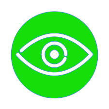

<app-navbar [titulo]="'Marcar consulta'"></app-navbar>
<ion-content scroll="true" class="ion-align-items-center">
  <app-tabs></app-tabs>
  <div class="page-content">
    <ion-card class="ion-justify-content-center ion-margin-bottom">
      <ion-row style="margin-top: 41px;" class="ion-justify-content-center">
        
      </ion-row>
      <ion-card-title class="ion-text-center ion-margin-bottom">Clínica OftalCare</ion-card-title>
      <ion-card-subtitle class="ion-text-center ion-margin-bottom">Agende uma consulta</ion-card-subtitle>
      <ion-row class="ion-justify-content-center">
        <ion-item>
          <ion-label>Choose an option:</ion-label>
          <ion-select [(ngModel)]="examType">
            <ion-select-option value="Exame de acuidade visual">Exame de acuidade visual</ion-select-option>
            <ion-select-option value="Tonometria">Tonometria</ion-select-option>
            <ion-select-option value="Biomicroscopia">Biomicroscopia</ion-select-option>
            <ion-select-option value="Mapeamento de retina">Mapeamento de retina</ion-select-option>
            <ion-select-option value="Topografia corneana">Topografia corneana</ion-select-option>
            <ion-select-option value="fundoscopia">Fundoscopia</ion-select-option>
            <ion-select-option value="Refração">Refração</ion-select-option>
            <ion-select-option value="Teste de visão de cores">Teste de visão de cores</ion-select-option>
            <ion-select-option value="Gonioscopia">Gonioscopia</ion-select-option>
            <ion-select-option value="Angiografia">Angiografia</ion-select-option>
          </ion-select>
        </ion-item>
      </ion-row>
      <ion-row class="ion-justify-content-center">
        <ion-item>
          <ion-datetime presentation="date" [(ngModel)]="date" value="2022-04-21T00:00:00" min="2022-03-01T00:00:00"
            max="2022-05-31T23:59:59"></ion-datetime>
        </ion-item>
      </ion-row>
      <ion-row class="ion-justify-content-center">
        <ion-button style="width: 90%;" (click)="save()" expand="block">Salvar</ion-button>
      </ion-row>
    </ion-card>
  </div>
</ion-content>